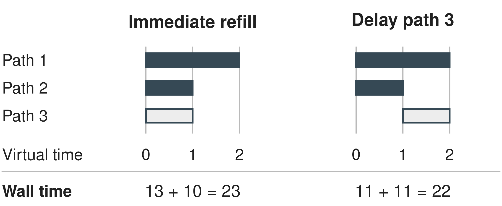
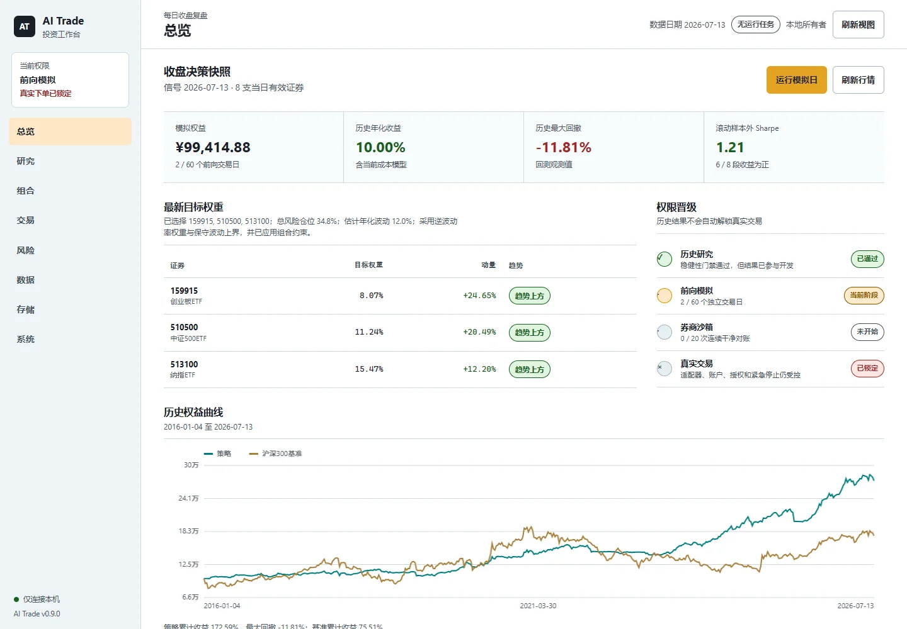
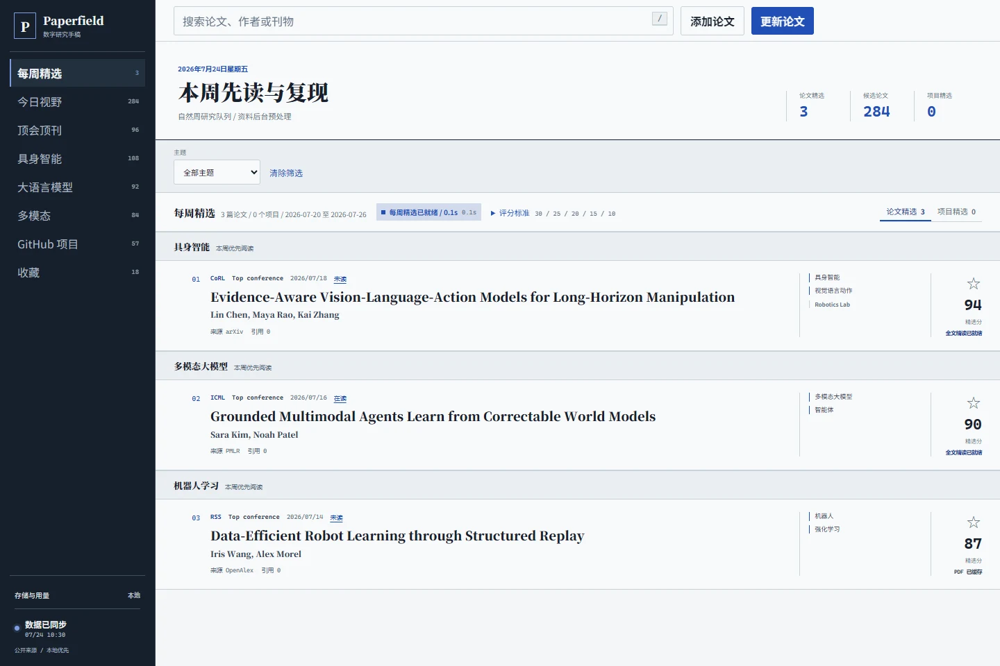

INTERNSHIP / SHENZHEN
Software engineering intern
Shenzhen Yaqi Technology Co., Ltd. Integrated YOLO segmentation and ONNX Runtime into an industrial-camera pipeline, implementing asynchronous capture and inference in C++ / Qt.
Inference systems · Robotics runtime
ABOUT / 01
I study the timing structure of large-model inference, the runtime of vision-language-action policies, and the boundary between simulation and deployable robotics.
I turn those questions into measurable delays, actions, trajectories, and logs, then publish the experiments so they can be opened, reproduced, and extended.
EXPERIENCE / 02
From industrial cameras and asynchronous inference to robot motion control, I keep placing software systems against observable boundaries.
Shenzhen Yaqi Technology Co., Ltd. Integrated YOLO segmentation and ONNX Runtime into an industrial-camera pipeline, implementing asynchronous capture and inference in C++ / Qt.
Connected visual measurement with multi-axis trajectory control, using a dedicated communication thread for dispatch, retries, and state feedback.
Wuhan University, School of Electronic Information. Provincial second prize in mathematical modeling, MCM Honorable Mention, and a provincial second prize in the integrated-circuit innovation competition. GPA 3.43/4.0 with an 85.37/100 average.
AWARDS / 03
Competitions and credentials from my undergraduate study.
National College Students Mathematics Competition
Mathematical Contest in Modeling
Mathematical Contest in Modeling / MCM-ICM
China College Students Integrated Circuit Innovation and Entrepreneurship Competition
College English Test Band 6
B.Eng. Electronic Information Engineering · GPA 3.43/4.0 · Average 85.37/100
RESEARCH FOCUS / 04
How can decoding requests share GPU time without handing tail latency to guesswork?
When a policy arrives late, where should a robot continue, and when should it stop?
How should measurement, capture, and motion control cooperate through clear state boundaries?
PROJECTS / 05
Every project uses the same compact record so the work stays easy to scan, compare, and open.
Inference scheduling, robot policy timing, and vision-based control.

TRACE / A800I measured when a free batch slot should be refilled, using A800 decoding traces and per-request logs.
I convert observation-to-response delay into action steps, then choose where execution should begin for a robot arm.
A compact replay for comparing end-effector trajectories under two control conditions.
Public GitHub projects outside the main robotics research line.

RESEARCH / BACKTESTINGA research-only simulated trading and backtesting workstation built around reproducible evidence and analysis.

DESKTOP / TOOLINGCONTACT / 06